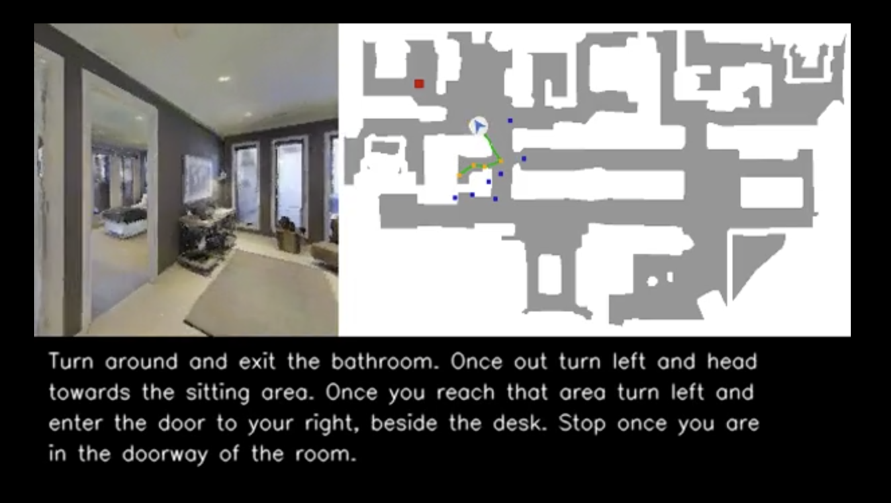

具身导航
具身智能VLN-世界模型导航算法研究-Waypoint方案
用空间地图、全局拓扑图和世界模型连接 Waypoint 规划与导航决策。
SR +8.1% / SPL +6.3%
技术实践
- 基于世界模型搭建VLN系统，在Habitat-R2R场景下完成RGB-D感知—空间建模—Waypoint规划—导航决策的闭环流程；
- 构建Occupancy/Semantic Map进行环境建模与Waypoint生成，结合CLIP 3D Feature Field与NeRF预测360°全景特征。
- 建立全局拓扑图表征导航节点及历史轨迹关系，引入世界模型预测候选Waypoint的未来状态，并通过状态反馈增强节点表征；
- 相比未加入世界模型的端到端方法，SR提升8.1％、SPL提升6.3％，且在RTX 3090 24GB单卡环境即可完成模型训练。
项目图片
